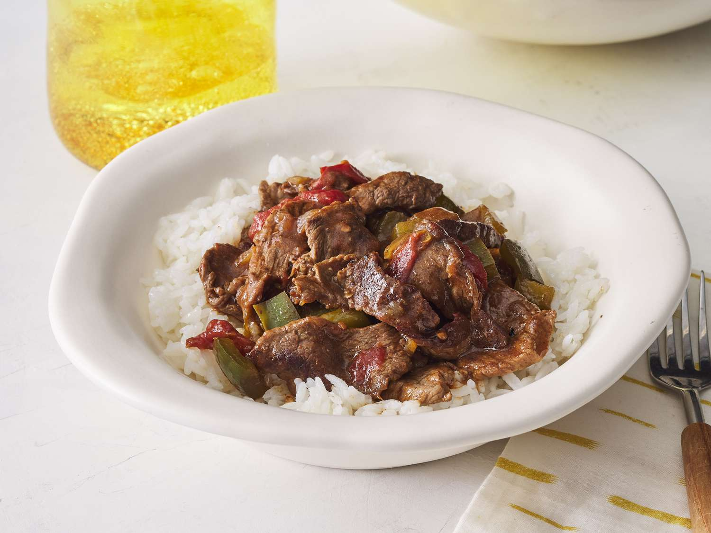

Slow Cooked Steak

Here's another easy and delicious meal. Sliced sirloin steak with peppers brewing inside of a slow cooker from 3 to 8 hours depending on the settings. Served over rice or noodles.
Ingredients
- 2 pounds beef sirlion, cut into 2 inch strips
- 3/4 teaspon garlic powder, or to taste
- 3 tablespoon vegetable oil
- 1 cube beef bullion
- 1/4 cup hot water
- 1 tablespoon cornstarch
- 1/2 cup chopped onion
- 2 large green bell peppers, roughly chopped
- 1 can of stewed tomatoes with liquid
- 3 tablespoonds of soy sauce
- 1 teaspoon of white sugar
- 1 teaspoon of salt
Steps
- First thing. Gather all ingredients into there measured amount in there own bowl. Slice peppers and meat.
- Second, mix some garlic powder with the sirlion and sear on a pan for 5 minutes per a side before placing in slow cooker.
- Mix bullion cube with hot water until dissolved and then mix cornstarch until it is dissolved.
- Mix into slow cooker with steak and add the peppers.
- Either cook for 3 to 4 hours on high or 6 to 8 hours on low. Serve over rice or noodles and enjoy!